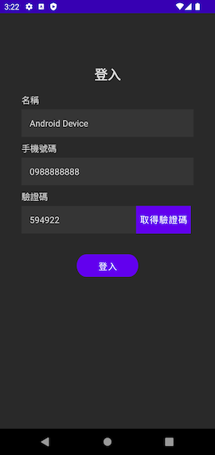
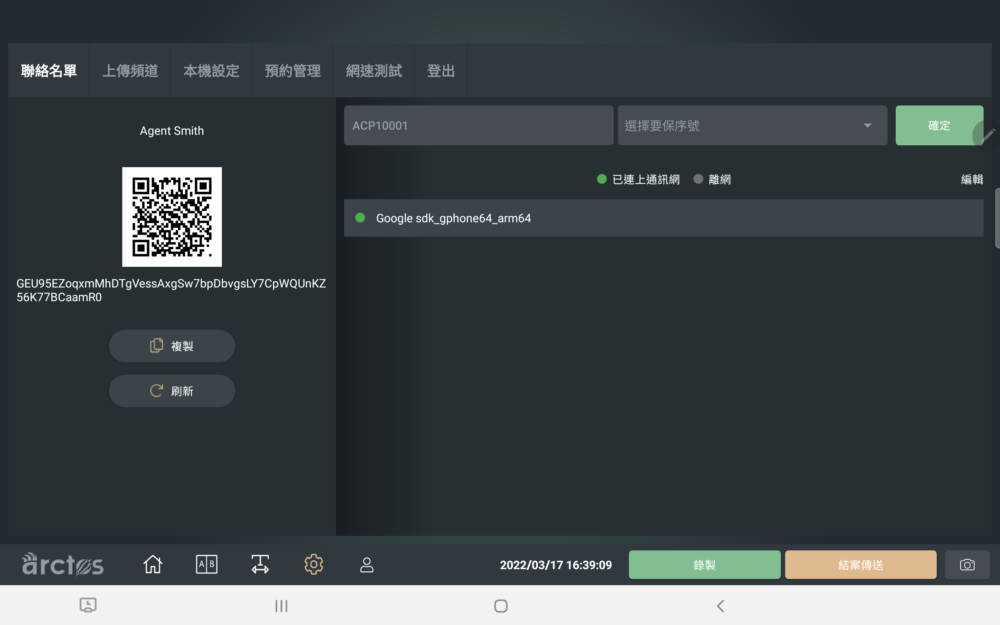
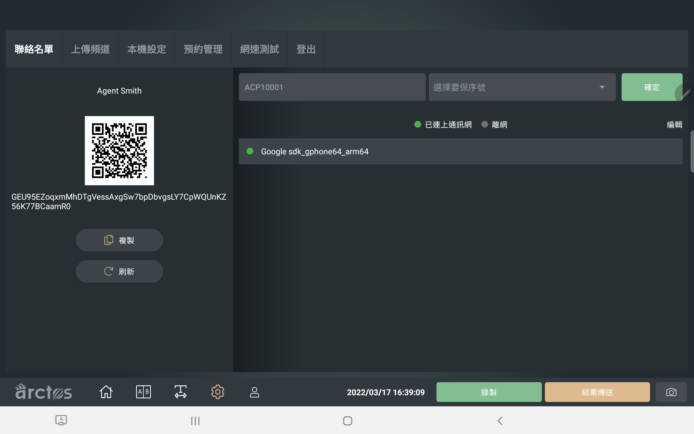

測試與驗證¶
利用 Arctos Client SDK 通訊功能所開發出的 APP，必須搭配 Arctos Switch 一起使用，才能發揮完整功能。
使用場景¶
下圖是 Arctos Client 與 Arctos Switch 在保險業的典型應用場景：
客戶使用自己的手機，操作安裝有 Arctos Client SDK 通訊功能的 APP。這個 Client APP 會與保險業務員使用的 Arctos Switch 建立點對點影音通訊。
業務員可以藉由語音，或是操作 Arctos Switch 上的功能，提示客戶進行必要的操作，例如簽署文件、核對身份等等。業務員也可以即時看到客戶手機傳回來的畫面，
安裝 Arctos Switch APP¶
Arctos Switch 設計是以平板電腦為目標，因此請準備一台 Android 平板電腦作為測試機器。
可以使用這個連結下載測試用的 Arctos Switch APP
下載下來的檔案為 apk 格式的 Android 應用程式。請將其放置到 Android 平板上面，並使用類似檔案瀏覽器或是 APK 安裝工具的應用程式開啟並安裝：
提示
Arctos Switch 需要處理大量影音編解碼工作，因此建議使用計算能力較強的平板電腦。建議使用 Samsung Galaxy S7 或更高等級的平板。
重要
如果無法安裝，請確保平板電腦已允許安裝來源不明的應用程式，或是使用不同檔案瀏覽器 APP 開啟 apk 檔案。
使用 Arctos Switch APP¶
開啟安裝完成的 Arctos Switch APP (在應用程式中的顯示名稱為 AC Switch)。
當進入到登入畫面時，請輸入以下資訊：
- 名稱：任何自訂名稱
- 帳號：qqq
- 密碼：qqq
按下登入後進到驗證畫面，請隨意輸入一個合法的行動裝置電話號碼 (不是真正的門號也可以)，並按下「發送驗證碼」按鈕。
在收到驗證碼後，於驗證碼欄位輸入此六位數字，按下確定。
系統會接著提示使用者允許 AC Switch 拍攝相片、錄音。請選擇「使用應用程式時」來給予權限。
接著多次點選下一步，觀看應用程式基本說明。最後，應用程式會自動進行網路測試，供使用者確認自己的網路狀態。
提示
要確保一對一影音傳輸品質穩定流暢，建議要有 10Mbps 以上的網路頻寬。
開啟與登入 Arctos Client SDK¶
在這個步驟，請準備好安裝有 Arctos Client SDK 的 APP，並將其安裝在另一台 Android 手機中。如果您不知道怎麼開發具有 Arctos Client SDK 功能的 APP，請先參考 快速開始 的步驟。
在登入畫面中，輸入自訂的顯示名稱、手機號碼，按下「取得驗證碼」按鈕，並在驗證碼欄位輸入收到的驗證碼。訊息輸入完畢後，按下登入，進入主畫面。

讓測試裝置建立好友關係¶
接著，我們要試著讓 Arctos Client APP 與 Arctos Switch 互相建立好友關係。當兩個 APP 成為好友之後，雙方可以看到彼此的顯示名稱、是否上線等等。最重要的是，只有在雙方成為好友後，才可以建立影音通訊。
在 Arctos Switch 主畫面下方的選單中，點選齒輪 圖示，並在上方功能選單，點選「聯絡名單」頁面。畫面左側會顯示一串文字，以及對應此文字的 QR Code 圖片。
拿起安裝有 Arctos Client APP 的手機，在操作畫面中，點選右上角的加號 圖示：
接著會進入 QR Code 掃瞄器畫面，點選畫面中間的 QR Code 大圖示：

這會開啟手機的後相機，並開啟 QR Code 掃瞄器的功能。將其對準 Arctos Switch 上的 QR Code 圖案，調整直到掃描成功為止。
當掃描成功後，應出現「新增裝置成功」的提示，並且在等待數秒後，Arctos Switch 與 Arctos Client SDK 的聯絡人名單都應該增加一筆資料，並且顯示對方的名稱。
 

到這個步驟，雙方已經互相成為好友，可以準備開始進行影音通訊。
提示
如果不方便使用手機鏡頭掃描 QR Code，Arctos Client APP 也可以使用手動輸入功能，輸入 Arctos Switch 聯絡名單中 QR code 下方的那串字串來加入好友。
開始影音通訊¶
在 Arctos Client SDK 直接通訊畫面中，點選要進行影音通訊的裝置，並點選畫面上方的「開始通訊」按鈕：
如同一般視訊通話，Arctos Client SDK 會試著聯絡 Arctos Switch 裝置。而 Arctos Switch 應該會收到來電，並在畫面左上角顯示來電通知。請直接將其接通：
當畫面接通後，Arctos Client 此時會開始將影音資訊傳輸至 Arctos Switch，並接收來自 Arctos Switch 的影像。在預設狀態下，Arctos Client 和 Arctos Switch 都會採用前鏡頭攝影。
在 Arctos Switch 中，點選下方的首頁 圖案，會進到通訊主畫面。在此畫面中，可以透過切換畫面模板，改變傳輸給 Arctos Client 的畫面內容。請自由調整、體驗不同的效果。

重要
Arctos Client 通訊畫面固定為橫向，與系統設定無關。
結束影音通訊¶
在 Arctos Client 通話畫面中，點選右下角的紅色電話圖案，即可中斷影音通訊。
完成功能驗證¶
到目前為止，我們已經確認 Arctos Client 能夠與 Arctos Switch 互相通訊。要開始通訊前，雙方透過 QR Code 互相成為好友，並可以在聯絡名單中看到對方上線。接著，Arctos Client 可以發起通訊，由 Arctos Switch 接通，讓雙方開始影音傳輸。